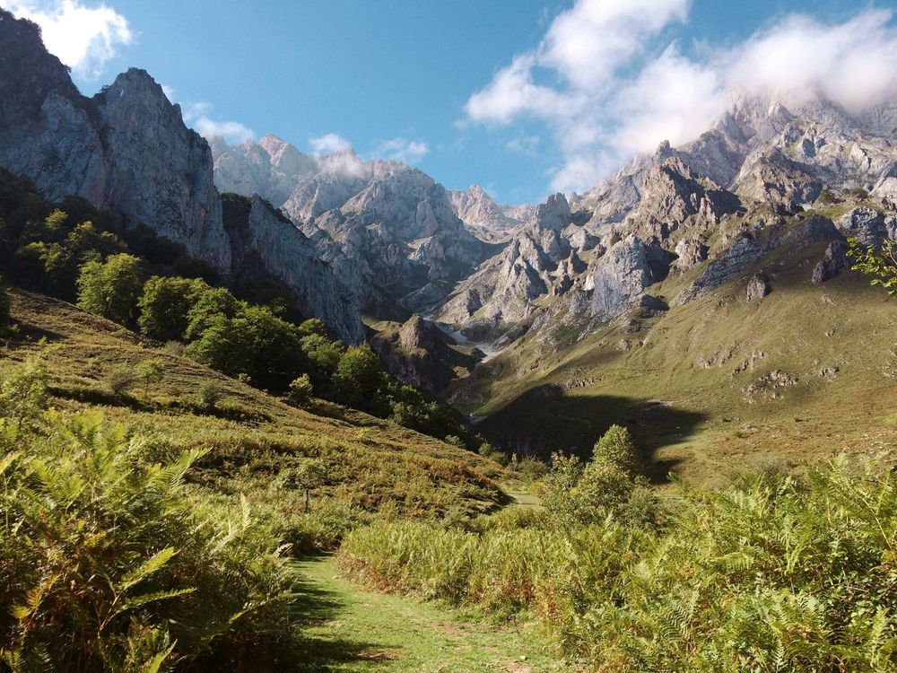
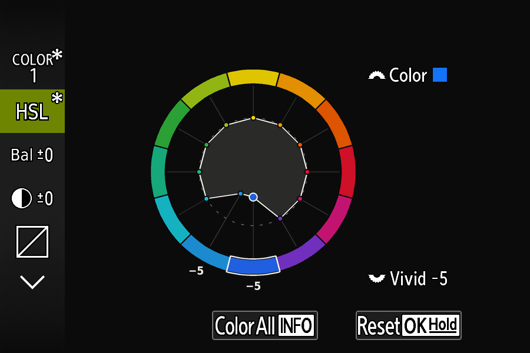
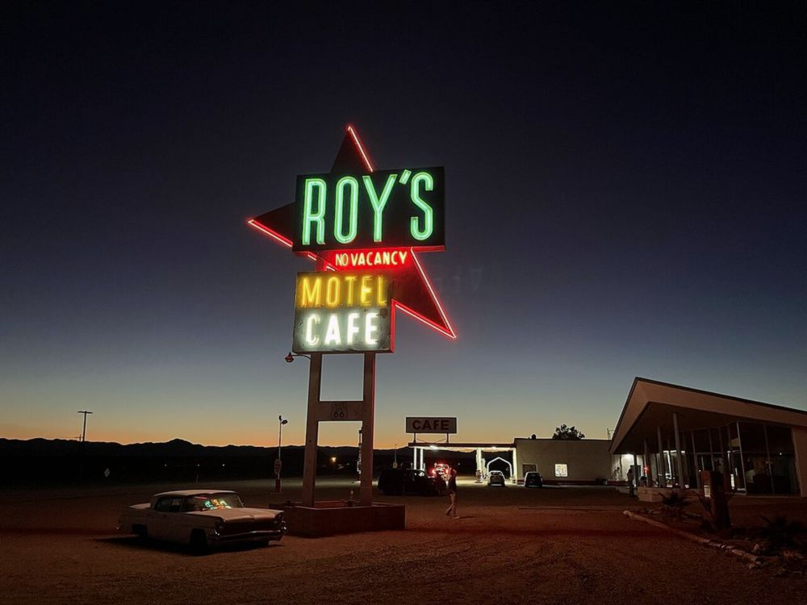
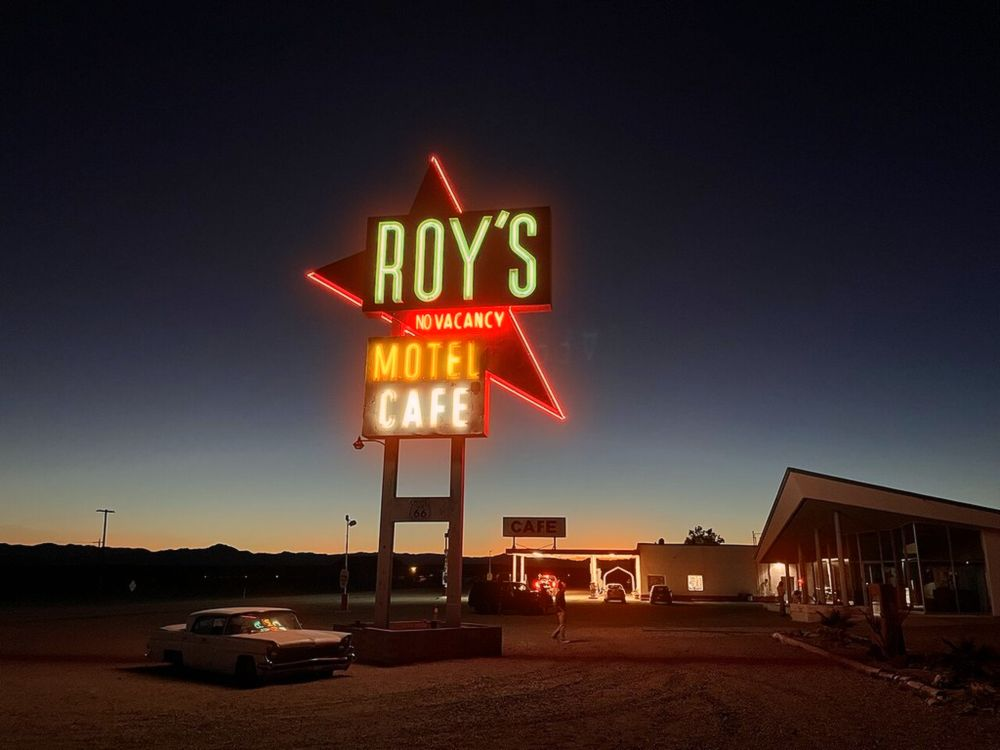
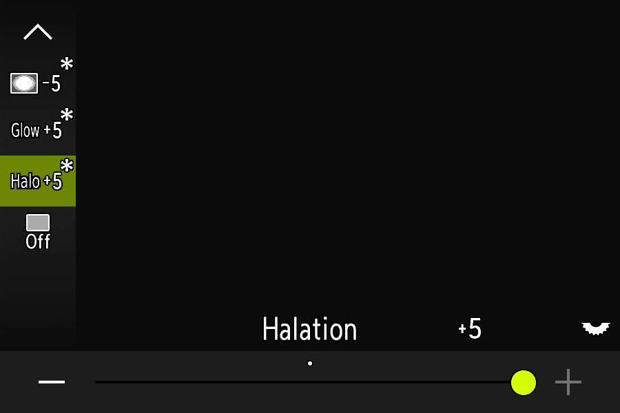
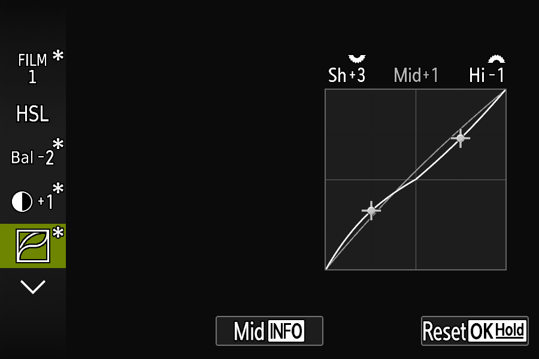
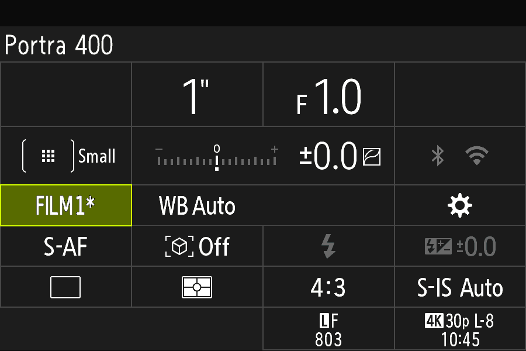
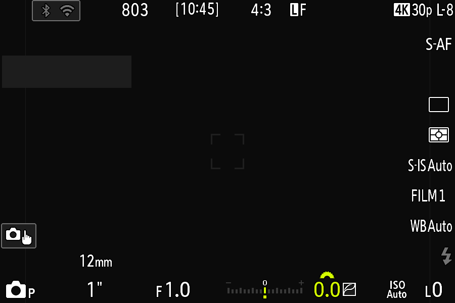

Twenty films, right where COLOR 1–4 are.
Turn the creative dial to COLOR and open Picture Mode. After COLOR 1–4 the list goes on with FILM 1–20, each with its own name as the big title. The standard 20: 18 films colour matched against film scans of a colour chart, plus CineStill 800T and Kodachrome 64, tuned by hand. Step through them below, and drag across the photo to compare with the original.
Portra 400
Colour matched
OriginalPortra 400A colour editor on the camera.
Below the film list, each film gets a column of settings. Change any of them on the camera and the photo follows at once. Pick a setting to see its screen on the camera and what it does to a photo.

On the camera
In the photo
Halation: the glow of cinema film.
Film without an anti-halation layer, like CineStill, lets bright lights bleed into a warm red-orange glow. Caduceus does this on the camera, in the JPEG, with its own Halation row from 0 to 5.


Halation 0Halation 5CineStill 800T on a night photo, LookLab preview.

- Works with or without Glow.
- Fades out on its own in bright daylight scenes.
- Kept with each film, like every other setting.
Your changes stay with each film.
Change a film on the camera and it remembers, even after you switch off. A star shows what you changed, and you can always go back.

The star (*) marks a changed film, and each row you changed.

The super control panel shows the film too: here FILM 1*, Portra 400.

On the shooting screen and in the viewfinder. Hold OK on a film to put it back as it was built.
Your films live in the camera now.
The 20 films, the changes you make to them and your Extras settings are kept in the camera’s own memory, next to its menu settings. Swap cards, format a card, use a blank one: your films stay.
-
Make your films
Start from the standard 20 or build your own in LookLab, and save them as
LOOKS.BIN. -
The camera takes them once
Put the file on the card. At the next half-press the camera copies a set it has never had into its memory, and keeps your selection and edits.
-
Any card works
From then on the card needs nothing of ours. A card without an
OM3MODfolder works in full: films, Glow, grain and all.
Simpler to install
The guide pictures, labels and tone guides are built into the firmware now. You copy one folder, DCOLYMP, and the optional LOOKS.BIN for your films.
Good to know
A camera Reset or an OM firmware update probably clears this memory; the camera then takes a card’s LOOKS.BIN again, as on a first start. Keep a copy of your films. The camera no longer writes film files to the card.
Made to fit how you shoot.
Make films on your computer
LookLab is a web page for making and changing films with a live preview, on sample photos or your own. It has 67 films to start from (18 colour matched), and can turn your own LUT or Lightroom preset into a film. Nothing is uploaded.
Open LookLab →The film in every photo
Each JPEG carries the film's name and its full recipe, as it was set when you pressed the shutter. Open the photo in LookLab and the film is yours again, or share the recipe code.
For developers: the photo code kit →Help when you need it
Something not right? A debug log shows what the camera loaded and did. Send it with a report on GitHub, or start with the FAQ.
How to send a debug log →Always reversible
Caduceus is a change to the camera's firmware 1.1, made on your own computer from OM's official file. You can go back to the camera's own firmware at any time.
Going back →Try it on your OM-3.
About 15 minutes, on an OM-3 with firmware 1.1 and a full battery.
Something not right? Send a debug log.
A debug log tells us what your camera loaded and what it was doing when things went wrong. It’s a short text file: no photos and nothing personal.
Download the switch
Get
Download DEBUG.TXTDEBUG.TXTfrom the latest release. What’s inside doesn’t matter: the camera only checks that it’s there.Put it on the card
Copy it into a folder called
OM3MODat the top of the card. Make the folder if it isn’t there (with v0.29 the card may have none).Use the camera
Put the card in, switch on, half-press the shutter a few times, then do whatever goes wrong until the problem happens.
Send the log
Back on your computer, the card now has
Report a problemOM3MOD/CADLOG.TXT. Open a new issue on GitHub, say what happened and attach that file.
When you’re done, delete DEBUG.TXT from the card, so the camera stops writing the log.
No CADLOG.TXT after switching on and half-pressing? Then the camera isn’t running Caduceus: the update didn’t install. See Install, step 4.
Reporting needs a free GitHub account.